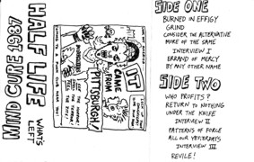

1987—What Did We Do To Deserve
This???

Somewhere around this time life became particulary bleak. I
suppose that's going to happen anyhow (and let me tell you, wearing black does
NOT make you feel better, so you might as well wear it anyhow 'cause you're so
miserable), but somehow as the 80's went on, and though we had a damn good set
and could hold our own at any gig, things were to take a drastic change.
It was in this time that I wrote the epic Errand of Mercy/By
Any Other Name. I consider it to be on of the best things I've ever done, and
feel that it acurately describes just about everything I (and we, as a band)
felt from 1983 to 1987. We toured the South and West playing such famous places
as Gillman's in Berkely, CA, and a pig farm in Texas.
Everthing you hear about touring is true. It's fun, but
tough, dirty and irritating. It's not a bad trade for the kind of crazy stuff
that can only happen to a band on tour, but in the end, it's exhausting. So in
the fall of 1987 after our gig with Bl'ast, I retired as a punk guitarist. The
guys kept it going for a bit longer, and eventually Half Life came to rest in
1990.
But as you know, they won't stay dead....
Vince Curtis, 2003
|
{kind=link}